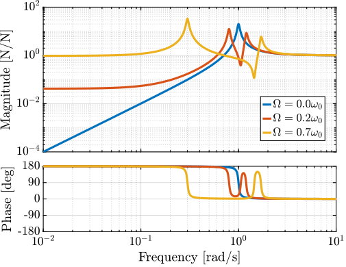

Matlab Computation
Table of Contents
1 System Description and Analysis
1.1 System description
The system consists of one 2 degree of freedom translation stage on top of a spindle (figure 1).

Figure 1: Figure caption
The control inputs are the forces applied by the actuators of the translation stage (\(F_u\) and \(F_v\)). As the translation stage is rotating around the Z axis due to the spindle, the forces are applied along \(\vec{i}_u\) and \(\vec{i}_v\).
The measurement is either the \(x-y\) displacement of the object located on top of the translation stage or the \(u-v\) displacement of the sample with respect to a fixed reference frame.
1.2 Equations
Based on the Figure 1, the equations of motions are:
Explain Coriolis and Centrifugal Forces (negative Stiffness)
1.3 Numerical Values
Let’s define initial values for the model.
k = 1; % Actuator Stiffness [N/m] c = 0.05; % Actuator Damping [N/(m/s)] m = 1; % Payload mass [kg]
xi = c/(2*sqrt(k*m)); w0 = sqrt(k/m); % [rad/s]
1.4 Campbell Diagram
The Campbell Diagram displays the evolution of the real and imaginary parts of the system as a function of the rotating speed.
It is shown in Figure 2, and one can see that the system becomes unstable for \(\Omega > \omega_0\) (the real part of one of the poles becomes positive).

Figure 2: Campbell Diagram
1.5 Simscape Model
Define the rotating speed for the Simscape Model.
W = 0.1; % Rotation Speed [rad/s]
The transfer function from \([F_u, F_v]\) to \([d_u, d_v]\) is identified from the Simscape model.
%% Name of the Simulink File mdl = 'rotating_frame'; %% Input/Output definition clear io; io_i = 1; io(io_i) = linio([mdl, '/K'], 1, 'openinput'); io_i = io_i + 1; io(io_i) = linio([mdl, '/G'], 3, 'openoutput'); io_i = io_i + 1;
G = linearize(mdl, io, 0);
%% Input/Output definition
G.InputName = {'Fu', 'Fv'};
G.OutputName = {'du', 'dv'};
1.6 Comparison of the Analytical Model and the Simscape Model
The same transfer function from \([F_u, F_v]\) to \([d_u, d_v]\) is written down from the analytical model.
Gth = (1/k)/(((s^2)/(w0^2) + 2*xi*s/w0 + 1 - (W^2)/(w0^2))^2 + (2*W*s/(w0^2))^2) * ...
[(s^2)/(w0^2) + 2*xi*s/w0 + 1 - (W^2)/(w0^2), 2*W*s/(w0^2) ; ...
-2*W*s/(w0^2), (s^2)/(w0^2) + 2*xi*s/w0 + 1 - (W^2)/(w0^2)];
Both transfer functions are compared in Figure 3 and are found to perfectly match.

Figure 3: Bode plot of the transfer function from \([F_u, F_v]\) to \([d_u, d_v]\) as identified from the Simscape model and from an analytical model
1.7 Effect of the rotation speed
The transfer functions from \([F_u, F_v]\) to \([d_u, d_v]\) are identified for the following rotating speeds.
Ws = [0, 0.1, 0.5, 0.8, 1.1]*w0; % [rad/s]
Gs = {zeros(2, 2, length(Ws))};
for W_i = 1:length(Ws)
W = Ws(W_i);
Gs(:, :, W_i) = {(1/k)/(((s^2)/(w0^2) + 2*xi*s/w0 + 1 - (W^2)/(w0^2))^2 + (2*W*s/(w0^2))^2) * ...
[(s^2)/(w0^2) + 2*xi*s/w0 + 1 - (W^2)/(w0^2), 2*W*s/(w0^2) ; ...
-2*W*s/(w0^2), (s^2)/(w0^2) + 2*xi*s/w0 + 1 - (W^2)/(w0^2)]};
end
They are compared in Figure 4.

Figure 4: Comparison of the transfer functions from \([F_u, F_v]\) to \([d_u, d_v]\) for several rotating speed
2 Problem with pure Integral Force Feedback
2.1 Plant Parameters
Let’s define initial values for the model.
k = 1; % Actuator Stiffness [N/m] c = 0.05; % Actuator Damping [N/(m/s)] m = 1; % Payload mass [kg]
xi = c/(2*sqrt(k*m)); w0 = sqrt(k/m); % [rad/s]
2.2 Equations
The sensed forces are equal to:
\begin{equation} \begin{bmatrix} f_{u} \\ f_{v} \end{bmatrix} = \begin{bmatrix} 1 & 0 \\ 0 & 1 \end{bmatrix} \begin{bmatrix} F_u \\ F_v \end{bmatrix} - (c s + k) \begin{bmatrix} d_u \\ d_v \end{bmatrix} \end{equation}Which then gives:
2.3 Simscape Model
The rotation speed is set to \(\Omega = 0.1 \omega_0\).
W = 0.1*w0; % [rad/s]
And the transfer function from \([F_u, F_v]\) to \([f_u, f_v]\) is identified using the Simscape model.
%% Name of the Simulink File mdl = 'rotating_frame'; %% Input/Output definition clear io; io_i = 1; io(io_i) = linio([mdl, '/K'], 1, 'openinput'); io_i = io_i + 1; io(io_i) = linio([mdl, '/G'], 2, 'openoutput'); io_i = io_i + 1;
Giff = linearize(mdl, io, 0);
%% Input/Output definition
Giff.InputName = {'Fu', 'Fv'};
Giff.OutputName = {'fu', 'fv'};
2.4 Comparison of the Analytical Model and the Simscape Model
The same transfer function from \([F_u, F_v]\) to \([f_u, f_v]\) is written down from the analytical model.
Giff_th = 1/(((s^2)/(w0^2) + 2*xi*s/w0 + 1 - (W^2)/(w0^2))^2 + (2*W*s/(w0^2))^2) * ...
[(s^2/w0^2 - W^2/w0^2)*((s^2)/(w0^2) + 2*xi*s/w0 + 1 - (W^2)/(w0^2)) + (2*W*s/(w0^2))^2, - (2*xi*s/w0 + 1)*2*W*s/(w0^2) ; ...
(2*xi*s/w0 + 1)*2*W*s/(w0^2), (s^2/w0^2 - W^2/w0^2)*((s^2)/(w0^2) + 2*xi*s/w0 + 1 - (W^2)/(w0^2))+ (2*W*s/(w0^2))^2];
The two are compared in Figure 5 and found to perfectly match.

Figure 5: Comparison of the transfer functions from \([F_u, F_v]\) to \([f_u, f_v]\) between the Simscape model and the analytical one
2.5 Effect of the rotation speed
The transfer functions from \([F_u, F_v]\) to \([f_u, f_v]\) are identified for the following rotating speeds.
Ws = [0, 0.1, 0.5, 0.8, 1.1]*w0; % Rotating Speeds [rad/s]
Gsiff = {zeros(2, 2, length(Ws))};
for W_i = 1:length(Ws)
W = Ws(W_i);
Gsiff(:, :, W_i) = {1/(((s^2)/(w0^2) + 2*xi*s/w0 + 1 - (W^2)/(w0^2))^2 + (2*W*s/(w0^2))^2) * ...
[(s^2/w0^2 - W^2/w0^2)*((s^2)/(w0^2) + 2*xi*s/w0 + 1 - (W^2)/(w0^2)) + (2*W*s/(w0^2))^2, - (2*xi*s/w0 + 1)*2*W*s/(w0^2) ; ...
(2*xi*s/w0 + 1)*2*W*s/(w0^2), (s^2/w0^2 - W^2/w0^2)*((s^2)/(w0^2) + 2*xi*s/w0 + 1 - (W^2)/(w0^2))+ (2*W*s/(w0^2))^2]};
end
The obtained transfer functions are shown in Figure 6.

Figure 6: Comparison of the transfer functions from \([F_u, F_v]\) to \([f_u, f_v]\) for several rotating speed
2.6 Decentralized Integral Force Feedback
Let’s take \(\Omega = \frac{\omega_0}{10}\).
W = w0/10;
Giff = 1/(((s^2)/(w0^2) + 2*xi*s/w0 + 1 - (W^2)/(w0^2))^2 + (2*W*s/(w0^2))^2) * ...
[(s^2/w0^2 - W^2/w0^2)*((s^2)/(w0^2) + 2*xi*s/w0 + 1 - (W^2)/(w0^2)) + (2*W*s/(w0^2))^2, - (2*xi*s/w0 + 1)*2*W*s/(w0^2) ; ...
(2*xi*s/w0 + 1)*2*W*s/(w0^2), (s^2/w0^2 - W^2/w0^2)*((s^2)/(w0^2) + 2*xi*s/w0 + 1 - (W^2)/(w0^2))+ (2*W*s/(w0^2))^2];
The decentralized IFF controller consists of pure integrators:
\begin{equation} \bm{K}_{\text{IFF}}(s) = \frac{g}{s} \begin{bmatrix} 1 & 0 \\ 0 & 1 \end{bmatrix} \end{equation}g = 2; Kiff = g/s*tf(eye(2));
The Root Locus (evolution of the poles of the closed loop system in the complex plane as a function of \(g\)) is shown in Figure 7. It is shown that for non-null rotating speed, one pole is bound to the right-half plane, and thus the closed loop system is unstable.

Figure 7: Root Locus for the Decentralized Integral Force Feedback controller. Several rotating speed are shown.
3 Modified IFF (pseudo integrator)
3.1 Plant Parameters
Let’s define initial values for the model.
k = 1; % Actuator Stiffness [N/m] c = 0.05; % Actuator Damping [N/(m/s)] m = 1; % Payload mass [kg]
xi = c/(2*sqrt(k*m)); w0 = sqrt(k/m); % [rad/s]
3.2 Modified Integral Force Feedback Controller
Let’s modify the initial Integral Force Feedback Controller ; instead of using pure integrators, pseudo integrators (i.e. low pass filters) are used:
\begin{equation} K_{\text{IFF}}(s) = g\frac{1}{\omega_i + s} \begin{bmatrix} 1 & 0 \\ 0 & 1 \end{bmatrix} \end{equation}where \(\omega_i\) characterize down to which frequency the signal is integrated.
Let’s arbitrary choose the following control parameters:
g = 2; wi = 0.1*w0;
And the following rotating speed.
Giff = 1/(((s^2)/(w0^2) + 2*xi*s/w0 + 1 - (W^2)/(w0^2))^2 + (2*W*s/(w0^2))^2) * ...
[(s^2/w0^2 - W^2/w0^2)*((s^2)/(w0^2) + 2*xi*s/w0 + 1 - (W^2)/(w0^2)) + (2*W*s/(w0^2))^2, - (2*xi*s/w0 + 1)*2*W*s/(w0^2) ; ...
(2*xi*s/w0 + 1)*2*W*s/(w0^2), (s^2/w0^2 - W^2/w0^2)*((s^2)/(w0^2) + 2*xi*s/w0 + 1 - (W^2)/(w0^2))+ (2*W*s/(w0^2))^2];
The obtained Loop Gain is shown in Figure 8.

Figure 8: Loop Gain for the modified IFF controller
3.3 Root Locus
As shown in the Root Locus plot (Figure 9), for some value of the gain, the system remains stable.

Figure 9: Root Locus for the modified IFF controller
3.4 What is the optimal \(\omega_i\) and \(g\)?
In order to visualize the effect of \(\omega_i\) on the attainable damping, the Root Locus is displayed in Figure 10 for the following \(\omega_i\):
wis = [0.01, 0.1, 0.5, 1]*w0; % [rad/s]

Figure 10: Root Locus for the modified IFF controller (zoomed plot on the left)
For the controller
\begin{equation} K_{\text{IFF}}(s) = g\frac{1}{\omega_i + s} \begin{bmatrix} 1 & 0 \\ 0 & 1 \end{bmatrix} \end{equation}The gain at which the system becomes unstable is
\begin{equation} \label{org69ac90f} g_\text{max} = \omega_i \left( \frac{{\omega_0}^2}{\Omega_2} - 1 \right) \end{equation}While it seems that small \(\omega_i\) do allow more damping to be added to the system (Figure 10), the control gains may be limited to small values due to \eqref{eq:iff_gmax} thus reducing the attainable damping.
There must be an optimum for \(\omega_i\). To find the optimum, the gain that maximize the simultaneous damping of the mode is identified for a wide range of \(\omega_i\) (Figure 11).
wis = logspace(-2, 1, 31)*w0; % [rad/s]
opt_zeta = zeros(1, length(wis)); % Optimal simultaneous damping
opt_gain = zeros(1, length(wis)); % Corresponding optimal gain
for wi_i = 1:length(wis)
wi = wis(wi_i);
gains = linspace(0, (w0^2/W^2 - 1)*wi, 100);
for g = gains
Kiff = (g/(wi+s))*eye(2);
[w, zeta] = damp(minreal(feedback(Giff, Kiff)));
if min(zeta) > opt_zeta(wi_i) && all(zeta > 0)
opt_zeta(wi_i) = min(zeta);
opt_gain(wi_i) = g;
end
end
end

Figure 11: Simultaneous attainable damping of the closed loop poles as a function of \(\omega_i\)
4 IFF with a stiffness in parallel with the force sensor
4.1 Plant Parameters
Let’s define initial values for the model.
k = 1; % Actuator Stiffness [N/m] c = 0.05; % Actuator Damping [N/(m/s)] m = 1; % Payload mass [kg]
xi = c/(2*sqrt(k*m)); w0 = sqrt(k/m); % [rad/s]
4.2 Schematic

Figure 12: Figure caption
4.3 Physical Explanation
- Negative stiffness induced by gyroscopic effects
- Zeros of the open-loop <=> Poles of the subsystem with the force sensors removes
- As the zeros are the poles of the closed loop system for high gains, we want them to be in the left-half plane
- Thus we want the zeros to be in the left half plant and thus the system with the force sensors stable
- This can be done by adding springs in parallel with the force sensors with a stiffness larger than the virtual negative stiffness added by the gyroscopic effects
The negative stiffness induced by the rotation is:
\begin{equation} k_{n} = - m \Omega^2 \end{equation}And thus, the stiffness in parallel should be such that:
\begin{equation} k_{p} > m \Omega^2 \end{equation}4.4 Equations
The equations should be the same as before by taking into account the additional stiffness. It then may be better to write it in terms of \(k\), \(c\), \(m\) instead of \(\omega_0\) and \(\xi\).
I just have to determine the measured force by the sensor
4.5 Effect of the parallel stiffness on the IFF plant
The rotation speed is set to \(\Omega = 0.1 \omega_0\).
W = 0.1*w0; % [rad/s]
And the IFF plant (transfer function from \([F_u, F_v]\) to \([f_u, f_v]\)) is identified in three different cases:
- without parallel stiffness
- with a small parallel stiffness \(k_p < m \Omega^2\)
- with a large parallel stiffness \(k_p > m \Omega^2\)
The results are shown in Figure 13.
One can see that for \(k_p > m \Omega^2\), the systems shows alternating complex conjugate poles and zeros.
kp = 0;
cp = 0;
Giff = linearize(mdl, io, 0);
%% Input/Output definition
Giff.InputName = {'Fu', 'Fv'};
Giff.OutputName = {'fu', 'fv'};
kp = 0.5*m*W^2;
cp = 0.001;
Giff_s = linearize(mdl, io, 0);
%% Input/Output definition
Giff_s.InputName = {'Fu', 'Fv'};
Giff_s.OutputName = {'fu', 'fv'};
kp = 1.5*m*W^2;
cp = 0.001;
Giff_l = linearize(mdl, io, 0);
%% Input/Output definition
Giff_l.InputName = {'Fu', 'Fv'};
Giff_l.OutputName = {'fu', 'fv'};

Figure 13: Transfer function from \([F_u, F_v]\) to \([f_u, f_v]\) for \(k_p = 0\), \(k_p < m \Omega^2\) and \(k_p > m \Omega^2\)
4.6 IFF when adding a spring in parallel
In Figure 14 is displayed the Root Locus in the three considered cases with
\begin{equation} K_{\text{IFF}} = \frac{g}{s} \begin{bmatrix} 1 & 0 \\ 0 & 1 \end{bmatrix} \end{equation}One can see that for \(k_p > m \Omega^2\), the root locus stays in the left half of the complex plane and thus the control system is unconditionally stable.
Thus, decentralized IFF controller with pure integrators can be used if:
\begin{equation} k_{p} > m \Omega^2 \end{equation}
Figure 14: Root Locus
4.7 Effect of \(k_p\) on the attainable damping
However, having large values of \(k_p\) may:
- decrease the actuator force authority
- decrease the attainable damping
To study the second point, Root Locus plots for the following values of \(k_p\) are shown in Figure 15.
kps = [1, 5, 10, 50]*m*W^2; cp = 0.01;
It is shown that large values of \(k_p\) decreases the attainable damping.

4.8 Optimal Gain
Let’s take \(k_p = 5 m \Omega^2\) and find the optimal IFF control gain \(g\) such that maximum damping are added to the poles of the closed loop system.
kp = 5*m*W^2; cp = 0.01; Giff = linearize(mdl, io, 0);
opt_zeta = 0;
opt_gain = 0;
gains = logspace(-2, 4, 100);
for g = gains
Kiff = (g/s)*eye(2);
[w, zeta] = damp(minreal(feedback(Giff, Kiff)));
if min(zeta) > opt_zeta && all(zeta > 0)
opt_zeta = min(zeta);
opt_gain = min(g);
end
end

5 Direct Velocity Feedback
5.1 Equations
The sensed relative velocity are equal to:
5.2 Plant Parameters
Let’s define initial values for the model.
k = 1; % Actuator Stiffness [N/m] c = 0.05; % Actuator Damping [N/(m/s)] m = 1; % Payload mass [kg]
xi = c/(2*sqrt(k*m)); w0 = sqrt(k/m); % [rad/s]
5.3 Plant - Bode Plot
The rotating speed is set to \(\Omega = 0.1 \omega_0\).
W = 0.1*w0;
And the transfer function from \([F_u, F_v]\) to \([v_u, v_v]\) is identified using the Simscape model.
%% Name of the Simulink File mdl = 'rotating_frame'; %% Input/Output definition clear io; io_i = 1; io(io_i) = linio([mdl, '/K'], 1, 'openinput'); io_i = io_i + 1; io(io_i) = linio([mdl, '/G'], 1, 'openoutput'); io_i = io_i + 1;
Gdvf = linearize(mdl, io, 0);
%% Input/Output definition
Gdvf.InputName = {'Fu', 'Fv'};
Gdvf.OutputName = {'Vu', 'Vv'};
5.4 Comparison of the Analytical Model and the Simscape Model
The same transfer function from \([F_u, F_v]\) to \([v_u, v_v]\) is written down from the analytical model.
Gdvf_th = (s/k)/(((s^2)/(w0^2) + 2*xi*s/w0 + 1 - (W^2)/(w0^2))^2 + (2*W*s/(w0^2))^2) * ...
[(s^2)/(w0^2) + 2*xi*s/w0 + 1 - (W^2)/(w0^2), 2*W*s/(w0^2) ; ...
-2*W*s/(w0^2), (s^2)/(w0^2) + 2*xi*s/w0 + 1 - (W^2)/(w0^2)];
Gdvf_th.InputName = {'Fu', 'Fv'};
Gdvf_th.OutputName = {'vu', 'vv'};
The two are compared in Figure 5 and found to perfectly match.

Figure 17: Comparison of the transfer functions from \([F_u, F_v]\) to \([v_u, v_v]\) between the Simscape model and the analytical one
5.5 Root Locus
The Decentralized Direct Velocity Feedback controller consist of a pure gain on the diagonal:
\begin{equation} K_{\text{DVF}}(s) = g \begin{bmatrix} 1 & 0 \\ 0 & 1 \end{bmatrix} \end{equation}The corresponding Root Locus plots for the following rotating speeds are shown in Figure 18.
Ws = [0, 0.1, 0.5, 0.8, 1.1]*w0; % Rotating Speeds [rad/s]
It is shown that for rotating speed \(\Omega < \omega_0\), the closed loop system is unconditionally stable and arbitrary damping can be added to the poles.

Figure 18: Root Locus for the Decentralized Direct Velocity Feedback controller. Several rotating speed are shown.
6 Comparison
6.1 Plant Parameters
Let’s define initial values for the model.
k = 1; % Actuator Stiffness [N/m] c = 0.05; % Actuator Damping [N/(m/s)] m = 1; % Payload mass [kg]
xi = c/(2*sqrt(k*m)); w0 = sqrt(k/m); % [rad/s]
The rotating speed is set to \(\Omega = 0.1 \omega_0\).
W = 0.1*w0;
6.2 Root Locus
wi = 0.1*w0;
%% Name of the Simulink File mdl = 'rotating_frame'; %% Input/Output definition clear io; io_i = 1; io(io_i) = linio([mdl, '/K'], 1, 'openinput'); io_i = io_i + 1; io(io_i) = linio([mdl, '/G'], 2, 'openoutput'); io_i = io_i + 1;
Giff = linearize(mdl, io, 0);
%% Input/Output definition
Giff.InputName = {'Fu', 'Fv'};
Giff.OutputName = {'Fmu', 'Fmv'};
kp = 5*m*W^2; cp = 0.01;
%% Name of the Simulink File mdl = 'rotating_frame'; %% Input/Output definition clear io; io_i = 1; io(io_i) = linio([mdl, '/K'], 1, 'openinput'); io_i = io_i + 1; io(io_i) = linio([mdl, '/G'], 2, 'openoutput'); io_i = io_i + 1;
Giff_kp = linearize(mdl, io, 0);
%% Input/Output definition
Giff_kp.InputName = {'Fu', 'Fv'};
Giff_kp.OutputName = {'Fmu', 'Fmv'};
%% Name of the Simulink File mdl = 'rotating_frame'; %% Input/Output definition clear io; io_i = 1; io(io_i) = linio([mdl, '/K'], 1, 'openinput'); io_i = io_i + 1; io(io_i) = linio([mdl, '/G'], 1, 'openoutput'); io_i = io_i + 1;
Gdvf = linearize(mdl, io, 0);
%% Input/Output definition
Gdvf.InputName = {'Fu', 'Fv'};
Gdvf.OutputName = {'Vu', 'Vv'};

6.3 Controllers - Optimal Gains
In order to compare to three considered Active Damping techniques, gains that yield maximum damping of all the modes are computed for each case.
The obtained damping ratio and control are shown below.
| Obtained \(\xi\) | Control Gain | |
|---|---|---|
| Modified IFF | 0.83 | 2.0 |
| IFF with \(k_p\) | 0.84 | 2.01 |
| DVF | 0.85 | 1.67 |
6.4 Transmissibility
%% Name of the Simulink File mdl = 'rotating_frame'; %% Input/Output definition clear io; io_i = 1; io(io_i) = linio([mdl, '/dw'], 1, 'input'); io_i = io_i + 1; io(io_i) = linio([mdl, '/Meas'], 1, 'output'); io_i = io_i + 1;
Tol = linearize(mdl, io, 0);
%% Input/Output definition
Tol.InputName = {'Dwx', 'Dwy'};
Tol.OutputName = {'Dx', 'Dy'};
Kiff = opt_gain_iff/(wi + s)*tf(eye(2));
%% Name of the Simulink File mdl = 'rotating_frame'; %% Input/Output definition clear io; io_i = 1; io(io_i) = linio([mdl, '/dw'], 1, 'input'); io_i = io_i + 1; io(io_i) = linio([mdl, '/Meas'], 1, 'output'); io_i = io_i + 1;
Tiff = linearize(mdl, io, 0);
%% Input/Output definition
Tiff.InputName = {'Dwx', 'Dwy'};
Tiff.OutputName = {'Dx', 'Dy'};
kp = 5*m*W^2; cp = 0.01;
Kiff = opt_gain_kp/s*tf(eye(2));
%% Name of the Simulink File mdl = 'rotating_frame'; %% Input/Output definition clear io; io_i = 1; io(io_i) = linio([mdl, '/dw'], 1, 'input'); io_i = io_i + 1; io(io_i) = linio([mdl, '/Meas'], 1, 'output'); io_i = io_i + 1;
Tiff_kp = linearize(mdl, io, 0);
%% Input/Output definition
Tiff_kp.InputName = {'Dwx', 'Dwy'};
Tiff_kp.OutputName = {'Dx', 'Dy'};
Kdvf = opt_gain_kp*tf(eye(2));
%% Name of the Simulink File mdl = 'rotating_frame'; %% Input/Output definition clear io; io_i = 1; io(io_i) = linio([mdl, '/dw'], 1, 'input'); io_i = io_i + 1; io(io_i) = linio([mdl, '/Meas'], 1, 'output'); io_i = io_i + 1;
Tdvf = linearize(mdl, io, 0);
%% Input/Output definition
Tdvf.InputName = {'Dwx', 'Dwy'};
Tdvf.OutputName = {'Dx', 'Dy'};

6.5 Compliance
%% Name of the Simulink File mdl = 'rotating_frame'; %% Input/Output definition clear io; io_i = 1; io(io_i) = linio([mdl, '/fd'], 1, 'input'); io_i = io_i + 1; io(io_i) = linio([mdl, '/Meas'], 1, 'output'); io_i = io_i + 1;
Col = linearize(mdl, io, 0);
%% Input/Output definition
Col.InputName = {'Fdx', 'Fdy'};
Col.OutputName = {'Dx', 'Dy'};
Kiff = opt_gain_iff/(wi + s)*tf(eye(2));
Ciff = linearize(mdl, io, 0);
%% Input/Output definition
Ciff.InputName = {'Fdx', 'Fdy'};
Ciff.OutputName = {'Dx', 'Dy'};
kp = 5*m*W^2; cp = 0.01;
Kiff = opt_gain_kp/s*tf(eye(2));
Ciff_kp = linearize(mdl, io, 0);
%% Input/Output definition
Ciff_kp.InputName = {'Fdx', 'Fdy'};
Ciff_kp.OutputName = {'Dx', 'Dy'};
Kdvf = opt_gain_kp*tf(eye(2));
Cdvf = linearize(mdl, io, 0);
%% Input/Output definition
Cdvf.InputName = {'Fdx', 'Fdy'};
Cdvf.OutputName = {'Dx', 'Dy'};

Figure 21: Comparison of the obtained Compliance
7 Notations
| Mathematical Notation | Matlab | Unit | |
|---|---|---|---|
| Actuator Stiffness | \(k\) | k |
N/m |
| Actuator Damping | \(c\) | c |
N/(m/s) |
| Payload Mass | \(m\) | m |
kg |
| Damping Ratio | \(\xi = \frac{c}{2\sqrt{km}}\) | xi |
|
| Actuator Force | \(\bm{F}, F_u, F_v\) | F Fu Fv |
N |
| Force Sensor signal | \(\bm{f}, f_u, f_v\) | f fu fv |
N |
| Relative Displacement | \(\bm{d}, d_u, d_v\) | d du dv |
m |
| Relative Velocity | \(\bm{v}, v_u, v_v\) | v vu vv |
m/s |
| Resonance freq. when \(\Omega = 0\) | \(\omega_0\) | w0 |
rad/s |
| Rotation Speed | \(\Omega = \dot{\theta}\) | W |
rad/s |
| Low Pass Filter corner frequency | \(\omega_i\) | wi |
rad/s |
| Mathematical Notation | Matlab | Unit | |
|---|---|---|---|
| Laplace variable | \(s\) | s |
|
| Complex number | \(j\) | j |
|
| Frequency | \(\omega\) | w |
[rad/s] |
| Mathematical Notation | Matlab | Unit | |
|---|---|---|---|
| IFF Plant | \(\bm{G}_\text{IFF}(s) = \frac{\bm{f}}{\bm{F}}\) | Giff |
N/N |
| DVF Plant | \(\bm{G}_\text{DVF}(s) = \frac{\bm{v}}{\bm{F}}\) | Gdvf |
(m/s)/N |
| IFF Controller | \(\bm{K}_\text{IFF}(s)\) | Kiff |
|
| DVF Controller | \(\bm{K}_\text{DVF}(s)\) | Kdvf |